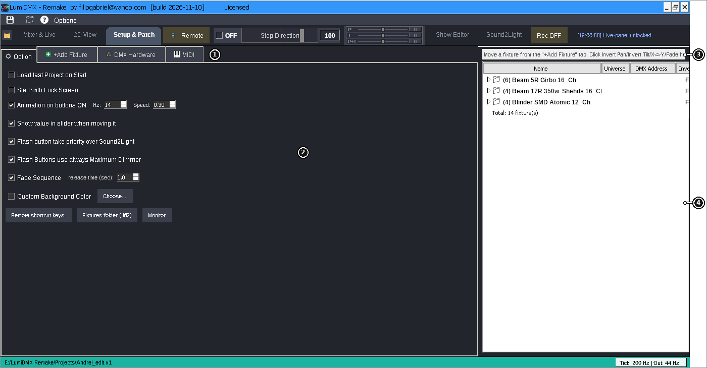

For: FullPlayer
Setup & Patch, in the toolbar of the main window, holds what a project needs before it is played: its fixtures and their DMX addresses - the patch - and the DMX interfaces, MIDI and the options of the program.

Setup & Patch with Andrei_edit.x1 open: the Option tab on the left, the patch list on the right.
| 1 | The tabs - Option, +Add Fixture, DMX Hardware, MIDI (below). |
| 2 | The tab shown - here Option. |
| 3 | The hint of the patch list - what can be done in it. |
| 4 | The patch list - the groups of the project, their fixtures and the channels of each, with where they are and four settings of each fixture. It stays on the right whatever tab is shown. See The patch list. |
| Tab | What it holds |
|---|---|
| Option | The options of the program: the project opened at the start, the lock screen, the animation of the buttons, the flash buttons, Fade Sequence, the background of the Live panel. See The Option tab. |
| +Add Fixture Full | The Patch Address Editor: new fixtures; moving, cloning and deleting them; a group taken from another project; Mirror / Offset; the tools between projects; the library tools. See +Add Fixture. |
| DMX Hardware | The DMX interfaces - Open DMX, Art-Net, Soundlight - and DMX-IN for the DMX received. See DMX Hardware. |
| MIDI | The MIDI ports, how MIDI values are scaled, the APC mini mk2 feedback. See MIDI. |
In the Player, +Add Fixture shows only Modify here not available: the fixtures of a project and their addresses stay as they are. The other tabs and the patch list work the same in both programs.
dmx_simulator_settings.json, the same for every project (see
The program folder and its files).